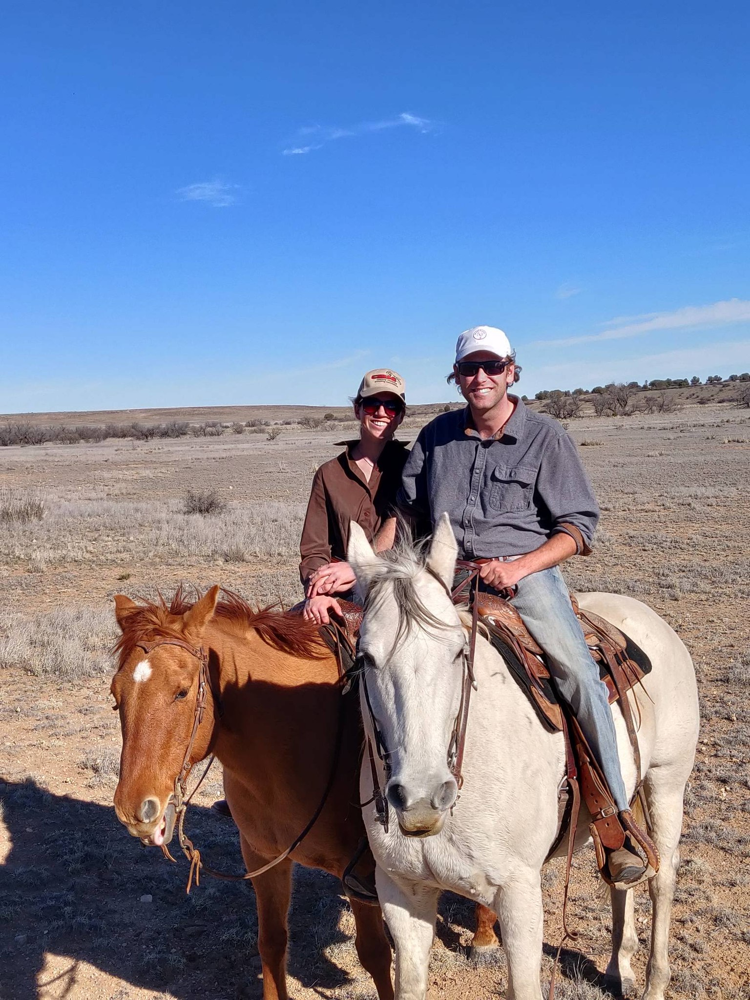
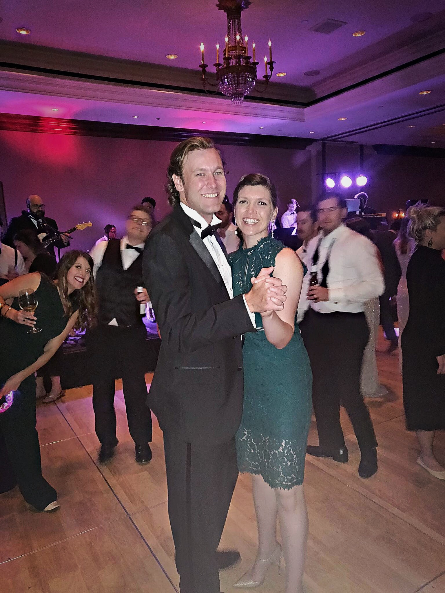
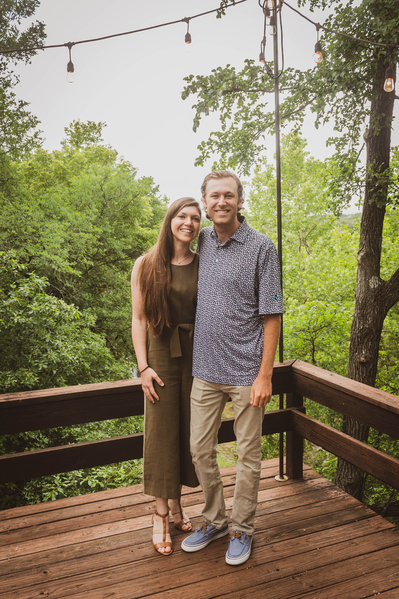

The difficulties of the past year have proven just one thing, love always prevails. We will be having our small ranch wedding at Upper Place, the ranch which Kate was raised, Saturday, May 1, 2021 at 4 p.m (MT). With all of the unknowns of 2020-21, the only thing that we know for sure is that we do not want to wait any longer. The outpour of love and support has meant the world to us. We can’t wait to safely celebrate with each of you soon!

Link to the event will be here on May 1st.

Shuttles: There will be shuttles departing the Inn of the Mountain Gods for the wedding party and guests. Please let either Will or Kate know if you would like to attend the wedding via shuttle. Drive Time: 1.5 hr drive from the Inn of the Mountain Gods or Ruidoso 45 minute drive from Roswell Location: Upper Place Ranch Upper Place is on the south side the West Pine Lodge Hwy just past mile marker 44 coming from Ruidoso or mile marker 43 coming from Roswell. The entrance will be decorated. If you have any questions regarding the location, please call or text Will or Kate for a drop pin the day before.
The Burke Center for Youth Pathfinder’s Ranch was just next door to Austin Equine Hospital where Kate lived and worked. It is an incredible facility with a mission, “to promote healing and inspire hope for children in crisis.” The horse program became near and dear to Kate’s heart as she witnessed the impact that her horse patients made on the boys in the Pathfinder Program. If you would like to donate to the Burke Center’s Pathfinder’s Ranch/Horse Program in lieu of a gift, please click the link below. https://burkecenterforyouth.org/donations/ Will & Kate are also registered at Pottery Barn/William Sonoma & Home Depot. Pottery Barn/William Sonoma Laura Kate Marle or Will Jones Registry ID: 500506222 Home Depot In-store Only